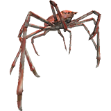

【新春イベント】2016年の正月は初詣の場所でカニを捕まえ放題！

みなさん！2016年、あけましておめでとうございます！
今年もサカナタッチをよろしくお願いします！！
新春一発目のサカナタッチイベントは「タカアシガニ」食べ放題…じゃなくて、つかまえ放題！正月はカニを食べるよね？きっと。
僕らの住んでいる都道府県に1ヶ所ずつ、初詣場所にタカアシガニが大量発生するよ！参拝には待ち時間で何時間も並ぶところもあるよね！？そういうときにヒマなのでカニを探してみよう！
出現期間
2016年1月1日〜1月7日
出現場所
各都道府県に1ヶ所、キミのホームの近くの初詣場所はあるかな？探してみよう！
北海道神宮, 善知鳥神社, 盛岡八幡宮, 竹駒神社, 太平山三吉神社, 山形縣護國神社, 開成山大神宮, 笠間稲荷神社, 一之宮貫前神社, 宇都宮二荒山神社, 氷川神社, 千葉神社, 明治神宮, 鶴岡八幡宮, 彌彦神社, 日枝神社, 尾山神社, 氣比神宮, 北口本宮冨士浅間神社, 諏訪大社上社本宮, 伊奈波神社, 静岡浅間神社, 熱田神宮, 伊勢神宮, 多賀大社, 伏見稲荷大社, 住吉大社, 生田神社, 春日大社, 日前神宮, 宇倍神社, 出雲大社, 最上稲荷, 廣島護國神社, 防府天満宮, 大麻比古神社, 金刀比羅宮, 石鎚神社, 潮江天満宮, 太宰府天満宮, 佐嘉神社, 諏訪神社, 藤崎八旛宮, 宇佐神宮, 宮崎神宮, 照国神社, 沖縄護国神社
つかまえたらTwitterで「#サカナタッチ」のハッシュタグをつけてつぶやこう！！初漁の健闘を祈ります！！！